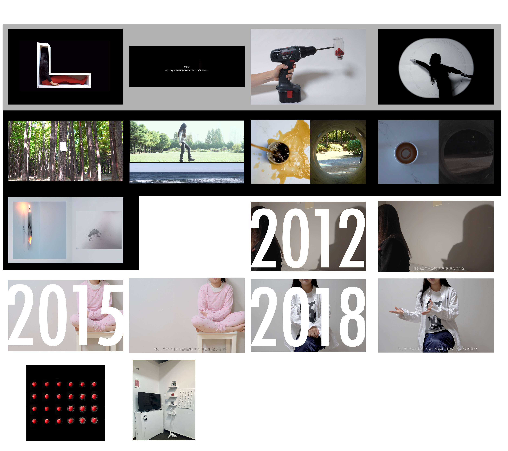

2024 · 개인작업
픽셀 단위로 흐릿하게 되살아나는 2009년 8월의 기억 한 조각이라던가, “이 높아보이는 계단을 어떻게 오르지?” 같은 보잘 것 없는 걱정들에 안심할 수 없는 마음, 또는 ‘외로움’ 따위의 흐릿한 감정들같이 실체가 없이 눈에 보이지 않는 것들을 가시화 시킨 뒤, 분석하고 분해하고자 한다. 겉으로는 그런 것 같지만 사실은 이렇지 않은 것들. 이러해 보이지만 실상은 다른 것들. 작고 하찮고 가벼워 보이지만, 나에게만큼은 그렇게 다가오지 않는 것들. 한때는 힘껏 마음을 쏟았지만, 지금의 나에게는 더 이상 그렇게 여겨지지 않는 것들. 혹 은 ‘그렇게까지’ 생각하고 염려할 필요가 아닌 일임에도 불구하고, 끊임없이 반추하며 그 속으로 가라앉고 들러붙게 되는 것들. 앞뒤가 맞지 않고, 어딘가 어긋나 있다. ‘적막 속에서 위태롭게 흔들리는 나의 심지는 왜 곧지 못할까?’ 라는 질문을 시작으로, 감정의 찌꺼기는 끊임없이 쌓이며 점차 닳아 없어진다. 작가 스스로를 가두는 직선들과 면은 계속해서 뒤틀린다.